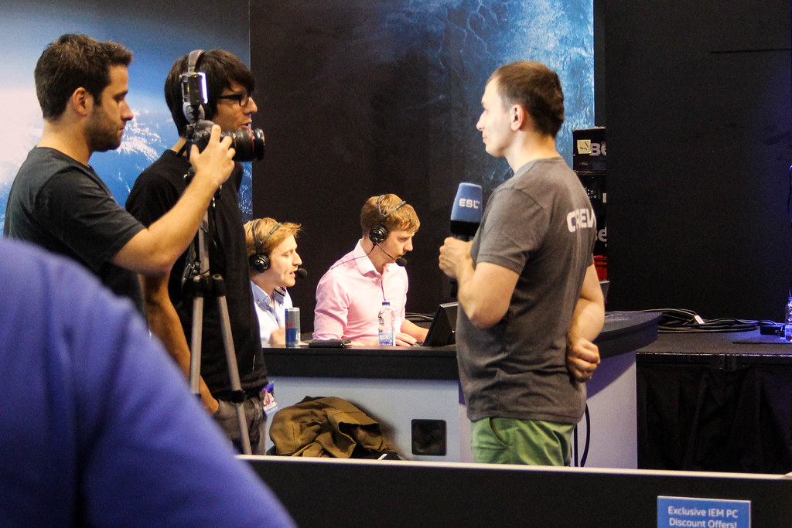
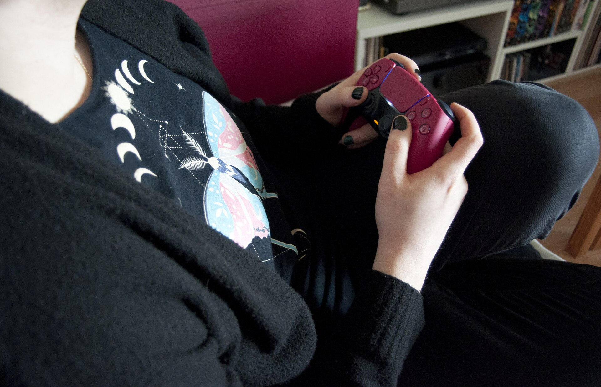

- 8h
- A thumbnail
- 24h
- A shorts pack
- 72h
- A podcast episode
- 2
- Revision rounds
- 4
- Platforms posted to
- 1
- Editor who knows your channel
Edited at race pace
Cutsway edits gaming videos, streams, shorts and podcasts, and has them back before your audience notices you were gone.
Sent now, back by
…one 12 to 25 minute edit
The lap chart
- Thumbnail8h
- Shorts pack24h
- Gaming video48h
- Stream VOD48h
- Podcast72h
The clock starts when your files land, not when we get round to them. Weekends included. Sample times, to be confirmed per channel.

Inside the pit stop

- 0h
Your files land
Upload the raw recording, the VOD, the facecam. Nothing to sort first.
- +4h
First pass
Dead air, loading screens and false starts come out. The story is found.
- +20h
The cut
Pacing, zooms, memes where they earn it, captions, sound design.
- +30h
Thumbnail and title
Three thumbnail options made alongside the edit, never after it.
- +36h
Your notes
Leave comments on the exact frame. Two rounds are included.
- 48h
Posted
Scheduled to YouTube, with shorts cut for TikTok, Reels and X.
Before you send it

What do I actually send?
Everything. The raw recording, stream VODs, the clips you are not sure about. Cutting is our job.
Will it still sound like my channel?
Your first edit starts with your last ten uploads. We learn your pacing, your jokes and what you never cut before we touch a frame.
What if I need it faster?
Tell us when you book. Rush slots exist most days for thumbnails and shorts.
Do you post it for me?
Yes, if you want. Titles, descriptions and schedule for YouTube, TikTok, Instagram and X.